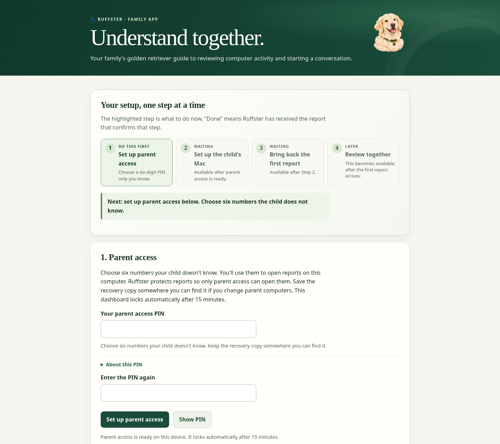
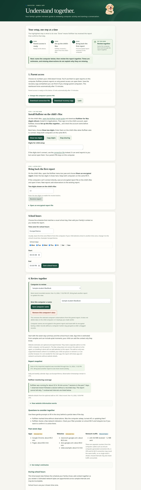

Ruffster gives families a clearer view of computer use.
Ruffster for Mac is available for families. This page shares what has been checked and what we’re learning as families begin using it.
What is working
- Visible Mac monitoring. In a logged-in session, the Mac agent records synthetic foreground-app observations in parent-key-encrypted storage, shows a separate status companion, reconstructs an observable gap, restarts after a forced stop through launchd, and the parent report counts sessions that follow an unclosed monitoring session.
- Mac app and setup. The 0.1.26 build targets macOS 12 or newer; its installer, foreground helper, and status helper carry an explicit minimum version, and the bundle validator checks each one. A family M1 Mac running macOS 15 could not open the prior build because it had accidentally required macOS 26. The new install guide names the exact app, places the child’s Mac setup in one short step, and removes contributor instructions from the parent flow. A family run is still needed to verify installation and the first report.
- Parent dashboard and reports. Parents can unlock reports, set school hours and retention, receive encrypted reports, keep computers separate, and review clearly labeled estimates and measured counters. An unlocked parent can change this computer's PIN while keeping the same reports and child computers; Ruffster asks them to save a new recovery copy before the next child setup.
- Automated checks. The latest full local suite ran 307 tests: 302 passed and five platform/tool checks were skipped on the Linux development host. The website accessibility scan checks all four public pages plus synthetic first-run, PIN-change, and populated parent-dashboard screens with and without website details at desktop and phone sizes; all 16 scans found zero Axe violations. GitHub CI run 42660055923 passed Linux, macOS, all Windows test groups, and both package builds. The updated install guide was checked live after its Pages deployment. The 0.1.25 Mac release 42660052908 published a DMG whose SHA-256 matches the release sidecar. Hosted CI cannot verify an interactive Task Scheduler session, so the real Windows agent lifecycle still needs a logged-in Windows computer.
- Windows family setup. A per-user setup, visible tray indicator, parent dashboard launcher, and update flow are implemented. The hosted package check skips the live scheduled-task test; local Windows builds keep that check enabled. The complete setup and report sharing still need a hands-on family-computer review before a Windows download is offered.
What we’re improving next
- Walk through the first setup on family Macs, then review the first reports together.
- Make the first-open step, setup windows, and screen-reader experience clear and easy to follow.
- Try the complete Windows setup, tray indicator, report sharing, update, and removal on a family computer.
- Learn from parents and children as they use weekly reports together, and keep improving the experience.
The Getting started guide walks through the Mac family setup. Windows is next.
Current automated test results
Local suite: 307 tests ran on the Linux development host: 302 passed and five platform/tool checks were skipped. GitHub Actions run 42660055923 passed Linux, macOS, all Windows test groups, and both package smoke builds. The 0.1.26 Mac release includes the app and checksum after its tagged build completes. GitHub Pages deploys this guide after the desktop and phone accessibility scan passes.
Hands-on limits: Marcus’s Mac now has a confirmed compatibility diagnosis: its M1 processor is supported, but the 0.1.25 Swift app and helpers were compiled with a macOS 26 minimum. The 0.1.26 build lowers and validates that minimum. The new installer still needs a family install, child-account setup, and first report exchange. No monitoring or family activity is claimed until those steps are visibly confirmed. Windows setup and the interactive agent still need a review on a logged-in Windows computer.
Website: the home page, getting-started guide, Progress page, FAQ, first-run parent dashboard, PIN-change form, and populated parent reports with and without website details passed desktop and phone accessibility scans locally with zero Axe violations and no horizontal overflow. Visit the published website.
What a Ruffster report looks like
These examples use made-up parent and activity data to show the current setup and report screens.



